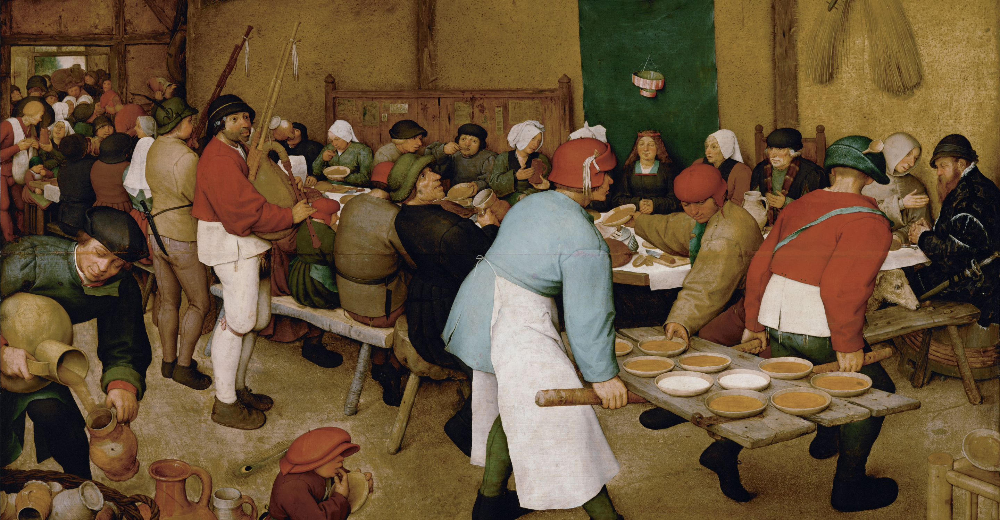
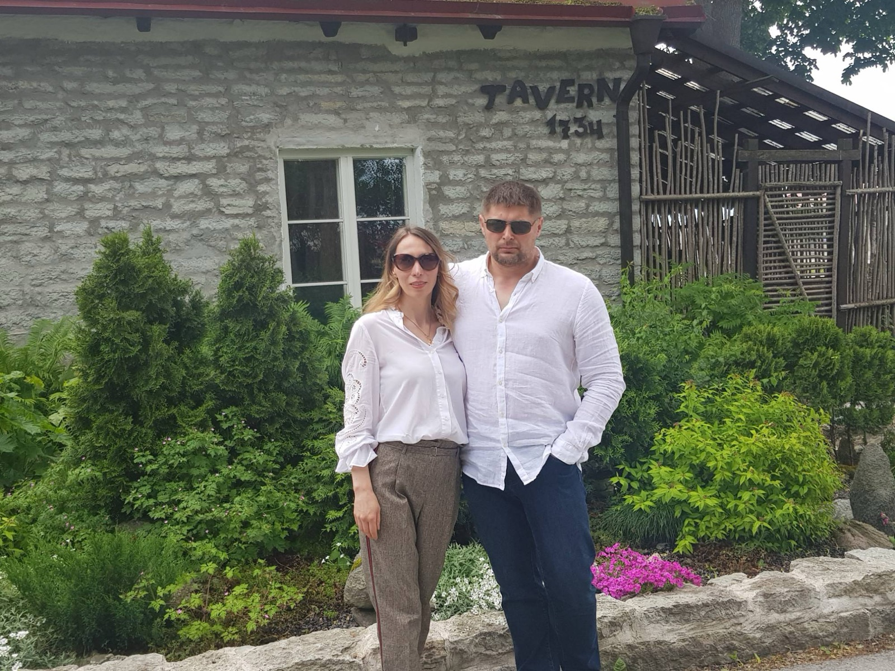
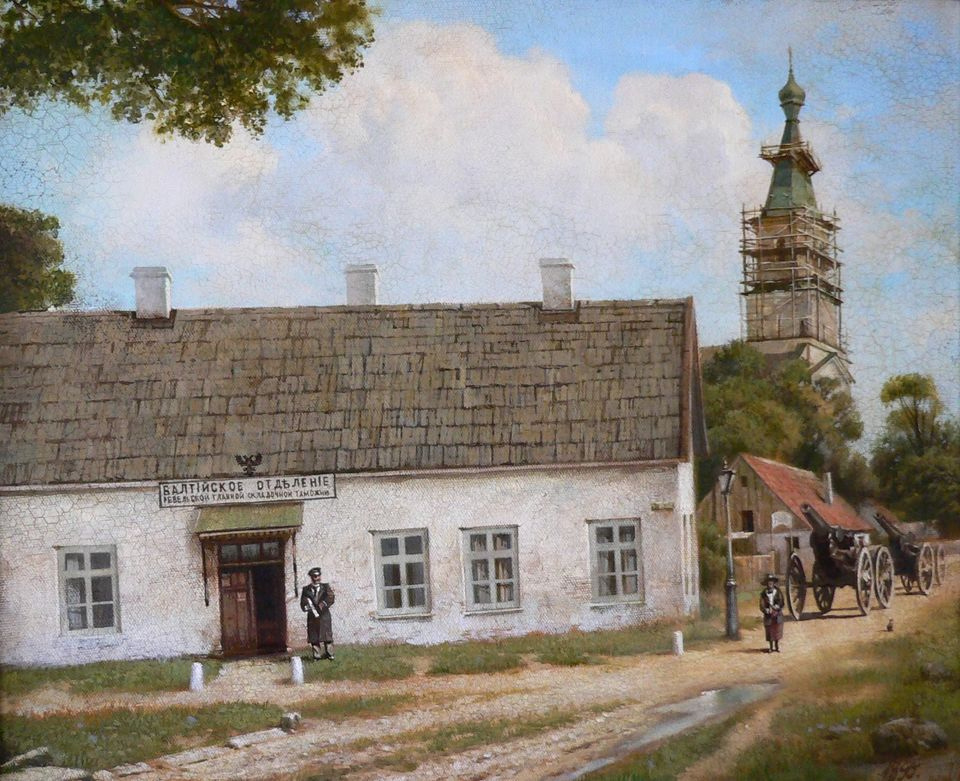
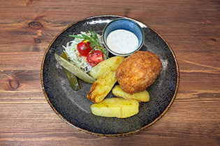
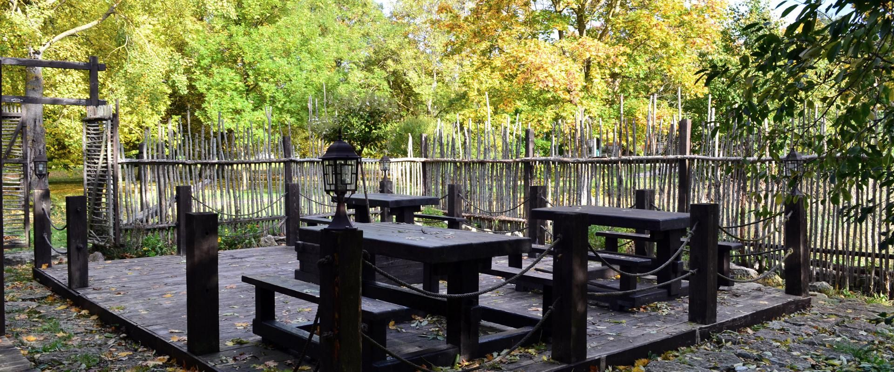
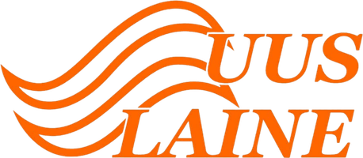

Семейные традиции и гостеприимство
01 Семейное дело
Более 20 лет с любовью к своему делу, истории и гостям
Таверна «Петровская Таможня» (Tavern Peetri Toll) — не просто ресторан или музей, а настоящее семейное дело, которому уже больше двух десятилетий. А началось всё ещё раньше, когда в 1989 году моя мама Галина Малютина и бабушка Людмила Николаевна Воскресенская открыли здесь первый кооператив — сауна-бар «Садко», ставший предшественником нашей таверны.
Заведение с новым названием, концепцией и интерьером открылось в этих стенах в 2004 году. В первый год работы Таверны «Петровская Таможня» судьба послала мне в помощь Андрея, и в дальнейшем мы занимались развитием и реставрацией уже вместе.
Все эти годы мы бережно собираем историю Палдиски, возвращаем к жизни старинные рецепты и стараемся, чтобы каждый посетитель — будь то путешественник, заглянувший на обед, или большая семья, отмечающая юбилей, — чувствовал себя как дома. Мы сами разрабатываем меню, готовим музейные выставки, реставрируем и обустраиваем здание, превращая каждый визит в маленькое открытие и тёплое воспоминание.
Интересный факт: годы спустя Галина Малютина собрала самые яркие и смешные истории из жизни бара «Садко» в книгу «Байки из-за барной стойки». Книга написана настолько легко и увлекательно, что её с удовольствием читают прямо за столиками и увозят с собой на память в качестве сувенира. Она уже переведена на эстонский и финский языки, а на русском тираж пришлось дозаказывать.
Заглянуть в книгу
в который хочется возвращаться
Архитектурное наследие
02 История здания
XVIII век
История этого одноэтажного каменного дома началась с высочайшего указа Её Императорского Величества Екатерины II от 23 ноября 1782 года. В нём государыня повелевала выделить участок земли ветерану Семилетней войны и начальнику острога майору Швенцау и даровать 10 рублей золотом на возведение здания. Спустя два года, в 1784-м, дом был готов. Через 6 лет здание перешло в казну Российской империи, а потом из-за бюрократической неразберихи более 45 лет числилось за одним ведомством, а оплачивалось другим. 68 листов переписки потребовалось чиновникам военного ведомства и министерства путей сообщения, чтобы разобраться, как такое могло произойти.
XIX век
15 августа 1843 года здание было передано в ведение таможенной заставы и получило своё первое официальное название — «Балтийское отделение Ревельской главной складской таможни». Так дом стал важным опорным пунктом морской торговли на Балтике.
XX век
В биографии дома были и поистине исторические моменты. Например, в начале столетия в этих стенах принимали самого императора: в 1910 году, во время отдыха царской семьи на яхте «Штандарт» у берегов Палдиски, Николай II заглянул в таможню, чтобы лично наградить её начальника, Булыгина, золотой заколкой. В 1930-х годах, в эпоху первой Эстонской Республики, здесь размещалось местное таможенное отделение, а в жилой части дома прошло детство Пауля Лаана — филолога и выдающегося деятеля эстонской диаспоры в Швеции. В советское время здание сменило множество ролей — от кузницы до стекольной мастерской, — пока в конце 1980-х, в эпоху первых кооперативов, здесь не открылся легендарный офицерский сауна-бар «Садко», положивший начало семейному делу.
XXI век
В 2004 году после масштабной реставрации в здании открылась Таверна «Петровская Таможня» (Tavern Peetri Toll). Современная история дома создавалась постепенно: шаг за шагом преображались интерьеры — сначала распахнул двери первый этаж, а потом был отремонтирован и второй. Сегодня внизу гостей принимает ресторан, а наверху расположились просторный банкетный зал и музей с уникальной коллекцией холодного оружия и богатым архивом по истории города.
В 2024 году дом отпраздновал двойной юбилей: 240 лет с момента постройки и 20 лет новой жизни в качестве ресторана Таверна «Петровская Таможня».

в старинном с двухсотлетней историей доме
Узнать больше об истории дома можно из книги Пауля Лаана «Мой родной Палдиски». Издание содержит редкие архивные фотографии и детские воспоминания о годах, проведённых в этих стенах, когда его отец служил в городе начальником таможни и капитаном порта.
Город и его судьба
03 История Палдиски
От петровского форпоста до современного морского города
Днём рождения Палдиски считается 23 июля 1718 года — в этот день Пётр I лично заложил на берегу залива Рогервик (ныне Пакри) незамерзающий военный порт и морскую крепость. Бастионы вырубали прямо в известняковом обрыве, а каменный мол должен был соединить материк с островами Пакри.
За три века не раз менялись и имя города, и само его предназначение. В 1762 году Екатерина II именным указом переименовала Рогервик в Балтийский Порт, а в 1787 году поставила его во главе одноимённого уезда.
Своё современное имя Палдиски получил в 1933 году. В советское время город был огорожен двойной колючей проволокой и полностью закрыт для свободного посещения, так как здесь располагался сверхсекретный учебный центр для экипажей атомных подводных лодок. Сегодня же это открытый миру морской край с современными портами, трёхвековой историей и живописной природой полуострова Пакри.

балтийских берегов
Узнать ещё больше об истории Палдиски можно из книги Йосефа Каца «Былой Палдиски и его люди». В ней летопись города раскрывается через истории его жителей и тех, чья жизнь в разные эпохи так или иначе оказалась с ним связана.
Актуальное
04 Новости
Все новости-

Октябрь 2026 · Музей
Документальный фильм о выставке холодного оружия
Премьера 12-минутного фильма о коллекции — на эстонском, английском и русском языках.
-

Сентябрь 2026 · Ресторан
Сезонное меню
Согревающие авторские напитки из местных ягод и трав.
-

Май 2026 · Ресторан
Летняя терраса открыта
Начинаем сезон отдыха на свежем морском воздухе.
Спонсоры и партнёры
05 Развиваем регион вместе
Бизнес, который приносит пользу родному краю
Эта таверна стала для нас больше, чем просто бизнес. Мы берёмся за проекты, которые возвращают городу его забытые страницы, наполняют старые стены новой жизнью и позволяют каждому гостю увидеть здесь не просто точку на карте, а особенное место, в которое хочется возвращаться снова и снова.
Мы активно сотрудничаем с культурными и историческими центрами нашего уезда — маяком Пакри, монастырём Падизе, Музеем-ателье Амандуса Адамсона.
Наши культурные и образовательные проекты получают поддержку фондов, самоуправления и партнёров, а в 2018 году наше недоходное объединение было удостоено титула «Самое яркое гражданское объединение Харьюмаа» (Harjumaa Särav Kodanikuühendus). Это доверие помогает нам создавать новые экспозиции, издавать книги и материалы и делать всё возможное, чтобы Палдиски оставался живым, интересным и по-настоящему гостеприимным городом.

